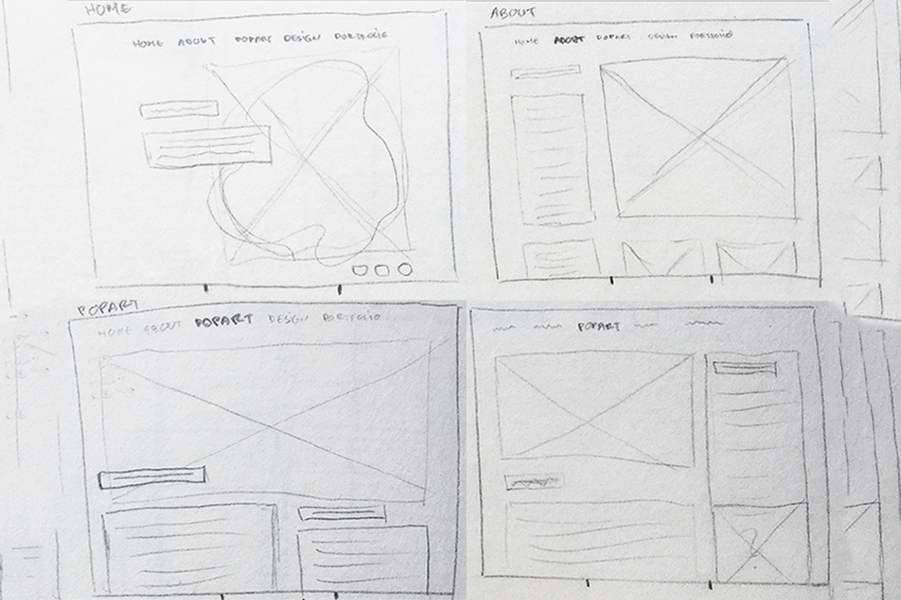
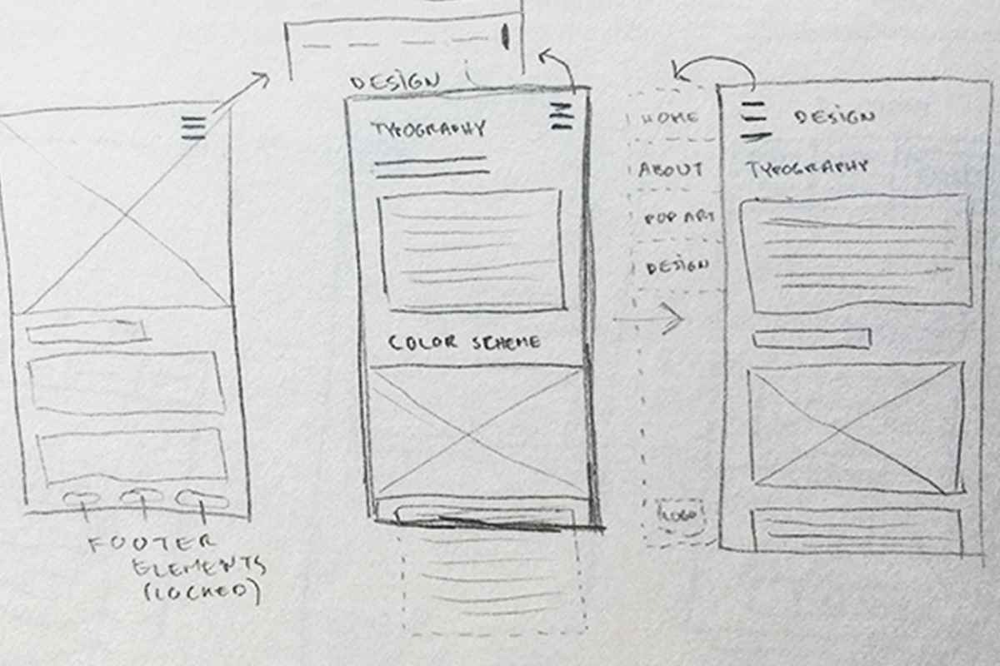
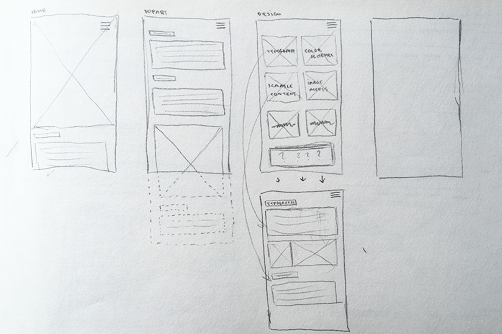
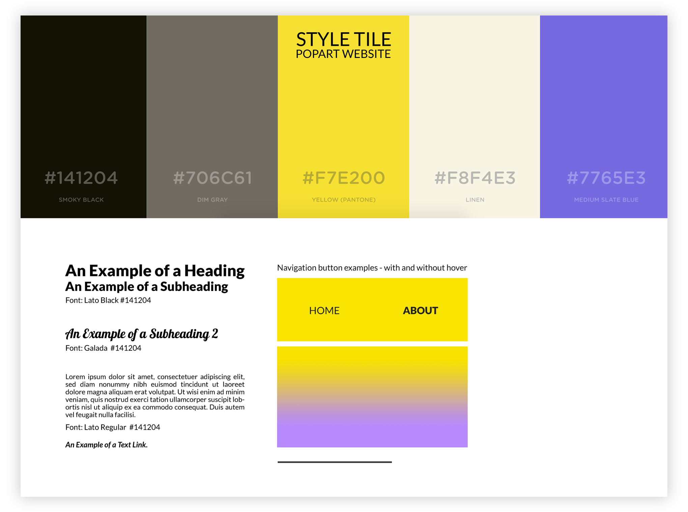
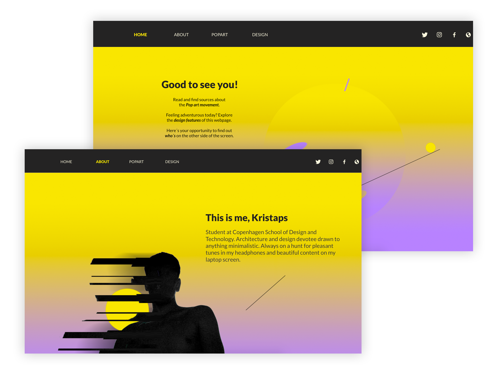
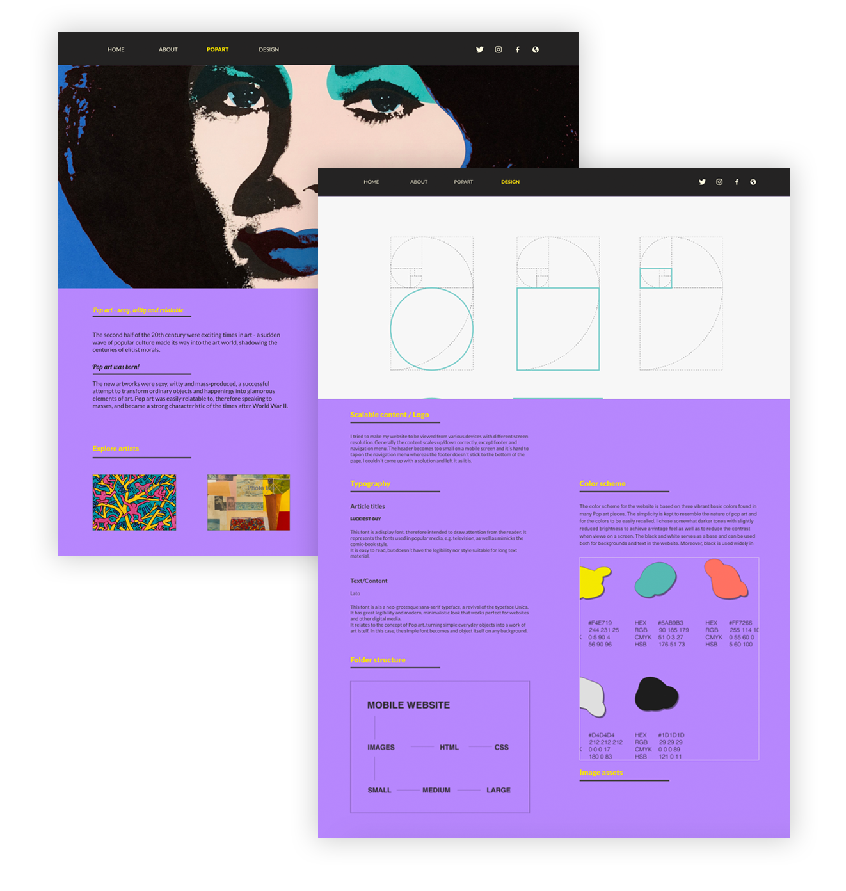
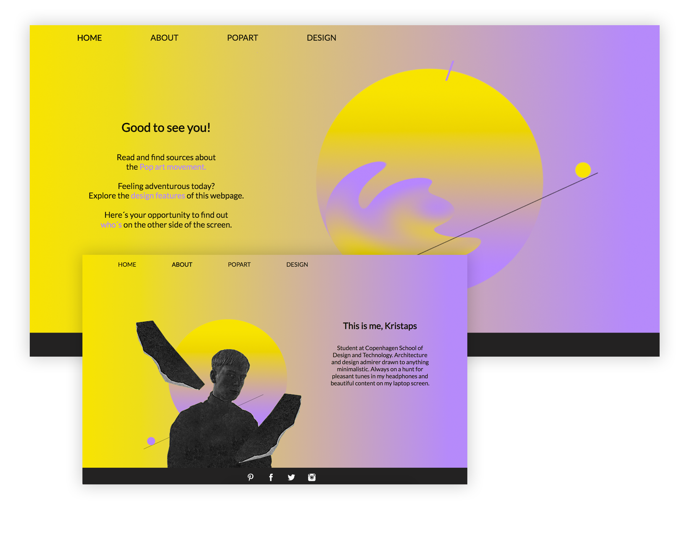
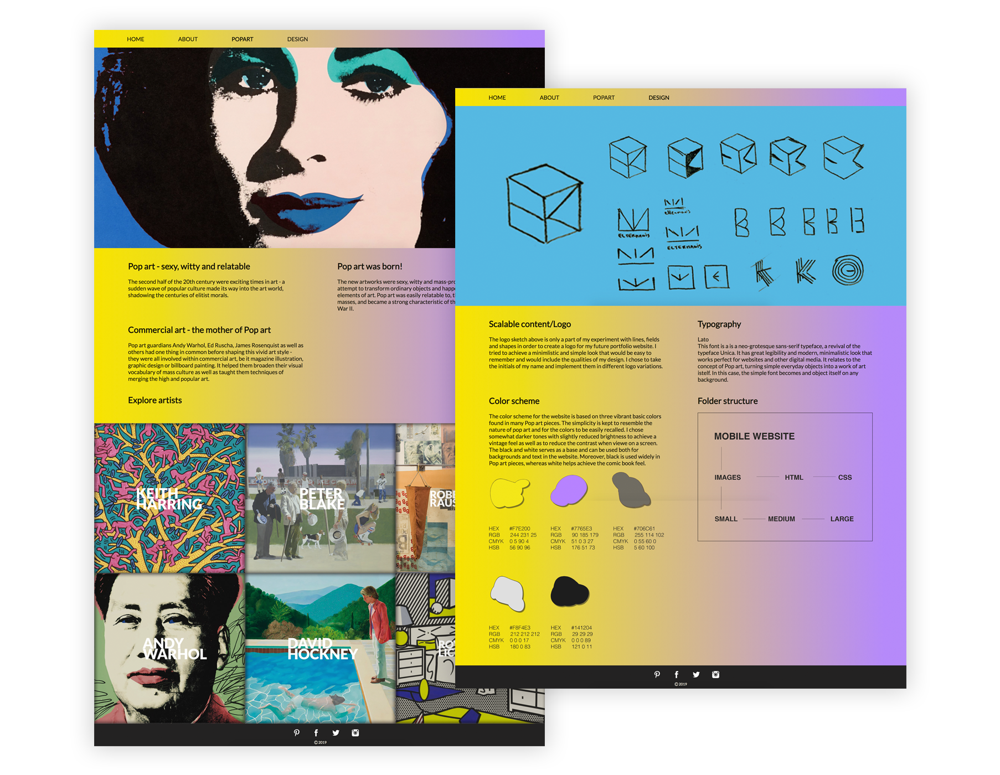

Responsive website
Goal
I was given an art style (Popart) and assigned to produce a website with a relevant content. The website had to be responsive and suited for various screen sizes. Since it was the first assignment of a kind it was clear that it would need thorough planning of the layout as well as require learning new ways of coding a responsive layout. The design process would be based on learning a few basic design principles and applying them in practise to achieve the desired result.
Process
Wireframing
While just getting introduced to the industry standards, it was was time to brainstorm and come up with an effective layout for the page. I started the design process by sketching wireframes of possible versions for the layout of each page of the website. This served as the main tool for planning the website and would later give me an overview of what needed to be coded.
I did wireframes for both a desktop and mobile experience of the page. The idea here was to create a general layout that would be responsive and keep the same level of usability and design when opened on different devices. I came up with several ideas, but chose, in my opinion, only the most effective ones to be taken onto the next stage - prototyping.
 Prototyping / testing / coding
Before starting the prototyping, i made a style tile that would serve as a guide for my design and would also make the whole design process easier. Based on my wireframes, i did a mid-fidelity prototype of the website that would later be taken further to user testing. Already during the prototyping i noticed a few weak points of the design/layout and solved them directly by changing the composition and keeping in mind various gestalt laws.
A test was carried out on a number of people online. It showed that the page had a good mix between personal style and characteristics of popart. A few minor improvements for layout, fonts and navigation were suggested and addressed later by making changes to some details on the page.
The coding was to focus on using the knowledge of css grids and implementing breakpoints for the main layout. It was essential to write semantically correct code for the pages to be validated.
Result
The whole process resulted in a simple, minimalistic website containing only the most necessary information and graphics for an increased ease of use.
 